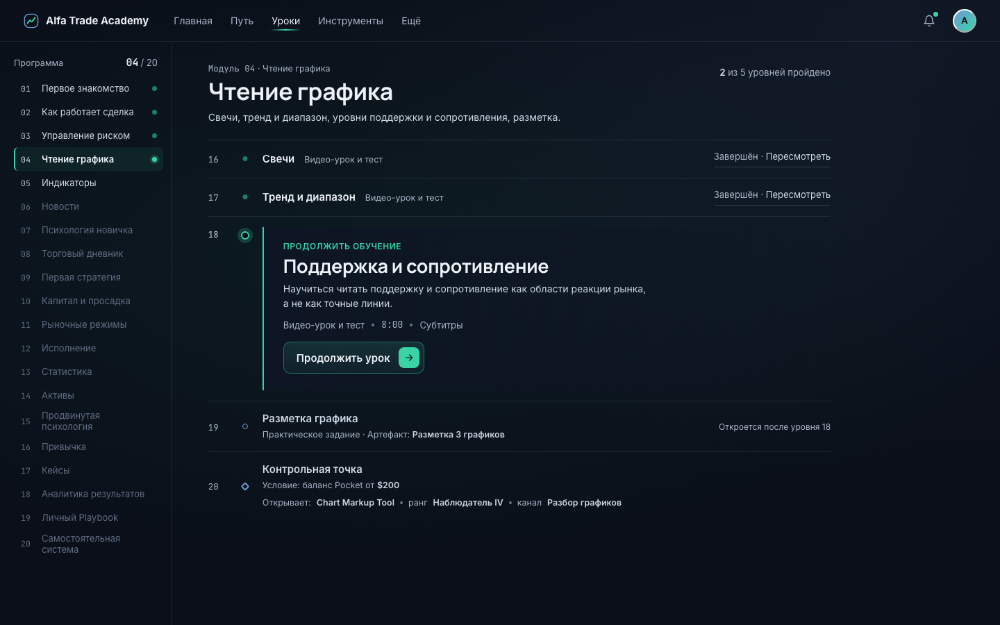
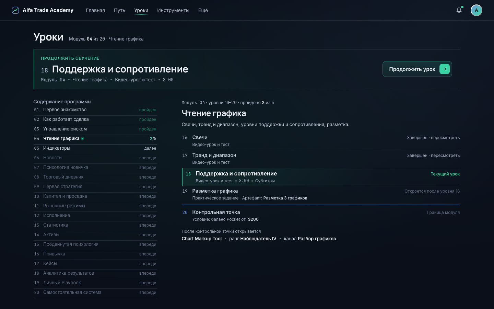
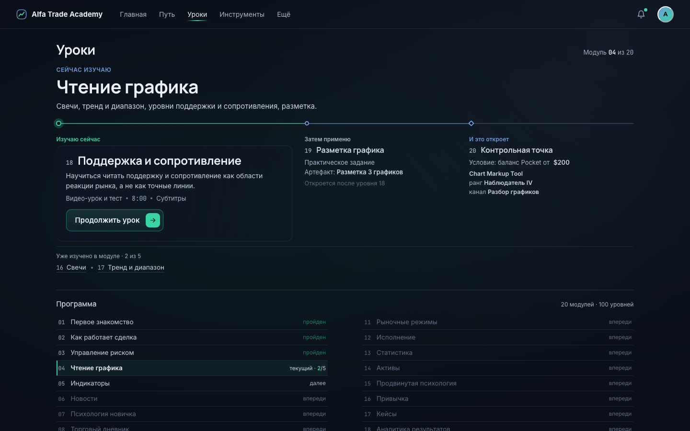

Один сценарий во всех трёх: Артём · модуль 04 «Чтение графика» · уровень 18 «Поддержка и сопротивление» · 2 из 5 · контрольная точка $200. Desktop 1440×900.

Module Desk

Curriculum Index

Learning Brief
Alfa Trade Academy · Web V2 · фаза D2C-A (art direction) · baseline eea3c1f
Победитель не выбран. Реализация не начинается до явного выбора направления.